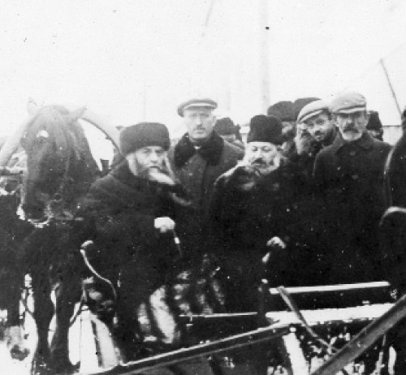

– תיאור גלות חצר הממלכה הליובאוויטשית מרוסטוב אל העיר לנינגרד - בשלהי אייר תרפ ”
בשלהי אייר תרפ”ד, נאלץ הרבי לעזוב את ביתו, לעקור את ממלכתו שברוסטוב ולנסוע לעיר הגדולה – לנינגרד. זו הפעם השניה שהממלכה הליובאוויטשית נעקרת ממקומה. בכאב לב עצום עוזב הרבי את ביתו, את חצר אביו, את ה’זאל’ הקדוש שבו הסתלקה נשמת אביו, את ‘גן עדן העליון’ החדר האישי של אביו הרבי, אף את מקווה הטהרה שנבנה ב
– תיאור גלות חצר הממלכה הליובאוויטשית מרוסטוב אל העיר לנינגרד -
בשלהי אייר תרפ”ד, נאלץ הרבי לעזוב את ביתו, לעקור את ממלכתו שברוסטוב ולנסוע לעיר הגדולה – לנינגרד. זו הפעם השניה שהממלכה הליובאוויטשית נעקרת ממקומה. בכאב לב עצום עוזב הרבי את ביתו, את חצר אביו, את ה’זאל’ הקדוש שבו הסתלקה נשמת אביו, את ‘גן עדן העליון’ החדר האישי של אביו הרבי, אף את מקווה הטהרה שנבנה במסירות רבה עם הוראות מדויקות של אביו הרבי • סיפור

”..בהקדים פתגם כ”ק מו”ח אדמו”ר ש”עשר גלויות גלתה ליובאוויטש, מליובאוויטש לרסטוב, מרסטוב לפטרבורג, ומפטרבורג גלתה מחוץ למדינה ההיא, ללטביא ואחר כך לפולין, ועד לגלות אמריקא, ובאמריקא גופא כמה מקומות, עד להמקום הקבוע ד”בית רבינו”, בית הכנסת ובית המדרש שלו, המרכז של ליובאוויטש…” (שיחת ‘בית רבינו שבבבל’).
א
עשר גלויות גלתה הממלכה הליובאוויטשית, הלא היא ממלכתם של רבותינו נשיאנו אדמו”רי חב”ד במשך יותר ממאה שנה. שרשרת הזהב מצאה לה בסיס ומשכן לאחר הסתלקות אדמו”ר הזקן בעיירה ליובאוויטש שברוסיה הלבנה, שם פעלה חצר המלכות ברוב חן וכבוד במשך מאה ושתיים שנים עד שזו נאלצה, בנסיבות החיים, לעקור ממקומה ולגלות, ובאשר המלך הולך – שם הולכת החצר (על סיבות הגלות הראשונה מליובאוויטש לרוסטוב – ראה באריכות בסיפור המופיע בגליון 811).
רוסטוב – עיר גדולה הנמצאת בדרום מערב רוסיה, מעט לפני תחילת רכס הרי הקווקז, ממוקמת קרוב לחופי ימת אזוב המתחברת לים השחור. בסמוך לעיר עובר נהר הדון והיא שוכנת משתי גדותיו של הנהר דון.
בעיר זו בחר אדמו”ר הרש”ב נשמתו עדן, להקים את חצרו בחורף תרע”ו, לאחר שנאלץ לעקור את ביתו וחצרו מליובאוויטש המעטירה נוכח מאורעות מלחמת העולם הראשונה. בעקבות הרבי משפחתו וחצרו, גלתה גם ישיבת “תומכי תמימים” המעטירה ובראשה מנהלה – בן הרבי, הלא הוא כ”ק אדמו”ר הריי”צ. ברחוב בראטסקי 44 הוקמה מחדש החצר והתבססה בה, וממנה החלה להתפשט אור החסידות והשפעתה לכלל חסידי חב”ד ברוסיה ובכלל.
זה המקום שראה וחווה את הסתלקותו הקודרת של כ”ק אדמו”ר הרש”ב, כאשר נשמתו הסתלקה לשמי רום והוא מותיר אחריו את בנו יחידו, הנסיך השישי, שבור-לב ומיוסר, לא לפני שהותיר צוואה לבנו המורה לו להמשיך את השושלת הליובאוויטשית המפוארת מדורי דורות. ואכן, הבן היחיד והאהוב, הריי”צ, אסף את כוחותיו, התרכז לקראת משימותיו הכבירות, והחל לבנות את הנדבך הנוסף של מלכות ליובאוויטש. ההתמודדות הייתה קשה מנשוא, שכן באותה תקופה השתלטו הקומוניסטים על רוסיה הגדולה ויצאו בשורה של גזירות כנגד העם היהודי, תורתו ומצוותיו.
לאחר הסתלקותו של אדמו”ר הרש”ב ביום ב’ בניסן תר”פ, נפל עול ההנהגה על כתפיו של בנו יחידו, אדמו”ר הריי”צ. כמו דומה היה שהרבי הרש”ב מפנה את מקומו בסדר הדורות, ונותן את חזית מסירות הנפש לבנו יחידו, הבן שחונך מאז ומקדם לעשייה ולמסירות נפש ממשית. לו נאה ולו יאה.
רוסטוב – כאן הבסיס והמרכז שבו פיתח הרבי הריי”צ את עבודתו הכבירה בעבור כל עדת חסידי חב”ד הפזורים בעשרות ערים ועיירות ברוסיה; מכאן פצח הרבי במלאכת קודש כדי לבסס את היהדות המעטירה של יהדות רוסיה בכללה, כשהוא יוצא למלחמת תנופה ומגן גם יחד, כנגד הבולשביקים הרשעים שאיימו לכלות כל זיק של יהדות מקרב יהודי רוסיה. לא קלה הייתה המשימה, שכן זו מלחמה של חיים ומוות, טוב ורע, קדושה וטהרה. המשך הקיום היהודי או היפוכו רחמנא ליצלן.
ב
את שנת האבל הראשונה, עד תרפ”א, עשה אדמו”ר הריי”צ כשהוא סגור בחדרו, וכמעט לא יצא משם, מלבד תפילות שבהן חויב לגשת לפני עמוד שליח הציבור. דומה כי אדמו”ר הריי”צ גייס את מיטב כוחות נפשו בטרם היציאה אל המלחמה הקשה, מלחמת התורה הקדושה מול צורריה; כאדם הנושם נשימה עמוקה לפני קפיצתו למים עמוקים זדוניים.
“השנה הראשונה, היא שנת תרפ”ב, עלתה לי לשנת הכנה והתרכזות” – מספר אדמו”ר הריי”צ באחד ממכתביו – “וכמעט אין עיר אחת בכל מרחבי מדינת רוסיה, אשר לא באתי בכתובים בהנוגע לחדרים, מקווה, רב, שו”ב”.
כבר בהתחלה החל הרבי לרכז את המערכה הגדולה. הוא שלח מכתבים לכל מקום שבו היה ריכוז חב”די ברחבי ברית-המועצות. במכתבים האלה ביקש לדעת את המצב המדויק של מוסדות הדת ואנשיה, לאור ההתפתחויות החדשות והקשות שיצרו הקומוניסטים חדשות לבקרים. מחסידיו האמונים ביקש להתעדכן מה מצב המקווה המקומי, האם יש שוחט ירא שמים בעירם, מה עם לימודיהם של הילדים, הדור הבא של היהדות, ומה הרבנים עושים בתפקידם שעה שהצוררים נוגשים בהם ללא רחם?
“לא שלוותי ולא שקטתי עד אשר הגעתי אל המטרה, ומטרתי הייתה לחזק לומדי תורה, בלי הבדל מפלגה, ובלי הבדל שנים, אחת היה לי אם לייסד חדר, ישיבה, לימוד גדולים וזקנים בשיעור גמרא, עין יעקב, משניות, או חברת תהלים של אנשים פשוטים”.
כל השנה ארגן הרבי את לשכת העבודה שלו, כשהוא מצרף אליו אחדים מה’תמימים’ ומהאברכים. חסידים אלו נשבעו להילחם עד טיפת הדם האחרונה. חלקם מיהרו להצטרף לפעילות הגדולה, ויצאו לנדוד בערים ובעיירות השונים כדי לעורר את אחיהם היהודים להמשיך לשמר את גחלת התורה והמצוות; להמשיך להעניק לילדיהם חינוך טהור והס מלהזכיר על אפשרות הפסקה משימוש במקווה הטהרה שבעיר.
גם סופר רהוט-עט יתקשה לתאר את תנאי החיים בימים ההם. המצב הלך והחריף בגשמיות וברוחניות מיום ליום ומשבוע לשבוע. המחסור הכלכלי היה נחלת הכול, והרעב פקד במלוא עוזו בכל רחבי ברית-המועצות. כל זאת, לצד השתוללותם של הקומוניסטים שרדפו בחמת זעם אחר כל שריד יהדות. הם פשטו את מלתעותיהם בכל מקום אפשרי.
מדי פעם בפעם יצא הרבי הריי”צ את הממלכה שברוסטוב ונסע לערים הגדולות מוסקבה או לנינגרד, שם נפגש עם שורה של אישים, עסקנים, חסידים וגבירים, באמצעותם הוא מבקש לקדם את המאבק לשמירת הגחלת היהודית. בערים הגדולות נמצאות עמדות השפעה רבות, והרבי נאלץ להיטלטל בדרכים. ברכבות הלילה האפלות הוא עשה דרכו מבירת ליובאוויטש לבירת רוסיה ובחזרה.
ג
חורף תרפ”ד.
בשלהי אותו חורף קודר, שוב נסע הרבי הריי”צ למוסקבה לרגל עסקנות ציבורית לטובת כלל ישראל. באותה נסיעה אסף הרבי קבוצת תמימים מובחרים ונחושים, דיבר בפניהם על חשיבות המלחמה שלפניהם, ועמם יחד כרת ברית למסירות נפש למען חיזוק היהדות עד טיפת הדם האחרונה. לא במליצה ולא במשל, אלא כפשוטו ממש.
כמו פעמים רבות, גם בחודש אדר תרפ”ד הגיע הרבי למוסקבה, ובפעם המי-יודע-כמה זימן אסיפה בנוכחות חשובי החסידים וחרוצי העסקנים היהודים, כדי לסכם את השנה האחרונה של הפעילות הענפה עליה ניצח למען התורה והיהדות, ולהתוות דרכי פעולה לקראת השנים הבאות. הרבי עצמו, כחייל ראשון בשורה, מצא לנכון לתת דו”ח מפורט על הפעילות רחבת ההיקף שנעשתה, כולל חשבונות כספיים מדויקים.
הרבי סיפר באסיפה כי כל העת הוא מנסה לגייס תורמים חדשים, בייחוד את ארגון הג’וינט העולמי, כדי שזה יסייע בפעילות היהודית הענפה ההולכת ונרקמת. הרבי נאבק מבית ומבחוץ – גם כנגד אלה המנסים להכשיל את הפעילות בדרכים שונות.
חברי האסיפה מביעים קורת רוח רבה נוכח פעילותו של הרבי ומשבחים את אומץ לבו ויכולותיו הנדירות. יש מהם המעידים כי עבודה זו שנעשתה בשנה האחרונה, הייתה צריכה להיעשות בדרך הטבע במשך שלוש שנים ואף יותר. חברי המועצה הצביעו ובחרו ברבי למנהל הראשי והכללי; הם נתנו בו את אמונם להמשיך ולנהל את ענייני יהדות רוסיה על פי שיקול דעתו.
הרבי שבע רצון; גם במישור הרשמי נרשמה התקדמות, וכעת יש לממש את הכוחות והיכולות ביתר שאת. הרבי אורז אפוא את חפציו ומתכונן לשוב לביתו שברוסטוב, בתקווה להיות בשבת בבית מדרשו של אביו הרש”ב. ביום שבת הקרוב יחול יום ההילולא של אביו האהוב, זה הזמן והמקום המתאים לומר קדיש, לפרוק את אשר על לבו ולהתגעגע לאור הגדול שממלא כל נים בנפשו ובנשמתו מאז יום היוולדו.
הרבי עושה את דרכו בחזרה לרוסטוב, עייף אך מרוצה, כשפתאום, על אֵם הדרך, הוא פוגש במפתיע את מזכירו הנאמן, החסיד הנודע הרב אלחנן דוב מרוזוב הי”ד, ממתין לבואו. פניו של המזכיר רציניות מאוד. בשורה לא טובה בפיו. הוא מספר כי לפני ימים אחדים פקדו את ביתו אנשי הג.פ.או. המשטרה החשאית, וערכו חיפוש דקדקני בביתו. הם גם חיפשו אחר הרבי במטרה מוצהרת לעָצרו.
אחד הנוכחים, מר גולדנברג, שמע מראש חוליית אנשי הבולשת, כי ברגע ששניאורסאהן יגיע לביתו, יש לאסרו מיד ולשלחו לארץ גזירה. הייתה זו פקודה נחרצת.
מסתבר שהרשעים עוקבים אחר הרבי ומעשיו כבר מההתחלה. הם יודעים כי הרבי עוסק בהחזקת הדת, וכי יש לו מאות שלוחים וצירים בכל רחבי ברית-המועצות; ואם לא די בכך, הרי שהוא מקבל סכומי כסף גדולים מארצות חוץ למטרה זו. את הפקודה הזאת משגר ראש הג.פ.או. לאנשיו ומורה להם להמתין לרבי ולאסרו ביום הגעתו.
את כל המידע המסווג הזה מעביר החסיד הרב אלחנן דוב מרוזוב לרבי, ומוסיף בקשה מיוחדת בשם אמו, הרבנית הצדקנית מרת שטערנא שרה, וכן בשם רעייתו הרבנית ובני הבית, כי הרבי ישוב מיד למוסקבה, שם ימתין עד יעבור זעם.
הרבי מהרהר שעה קלה, מתבונן במחשבותיו לכאן ולכאן, ולבסוף מקבל את בקשת אמו, סב על עקבותיו ושב למוסקבה. כה ייחל למנוחה קצרה בביתו… להיות עם אביו ביום ההילולא הקדוש… והנה, המצוד אחריו מתחיל… אין אף לא רגע אחד של מנוחה…
הרבי חוזר למוסקבה, שהם הוא מוצא מקום מקלט בכפר שבפרברי העיר, עד יעבור זעם מבלי לדעת כמה זמן יימשך הדבר. הוא ממתין לקבלת ידיעות נוספות על מנת לכלכל את המשך צעדיו.
הרבי מבין כי כשיצטרך בכל זאת לשוב לביתו, עליו יהיה לתת דין וחשבון לחוקריו-רודפיו, והוא מארגן ‘הכשר’ לנסיעתו. הוא יודע היטב כי אחת השאלות הראשונות שיישאל בחקירתו הצפויה היא, מדוע נסע למוסקבה. הוא יודע כי לא יוכל לחשוף מאום על ריכוז פעולותיו למען העם היהודי והמשך שמירת הגחלת, ולכן הוא מכין אמתלה על ידי הכנת הצעה כתובה וחתומה מאת נציגי בתי הכנסיות השונים במוסקבה המבקשים ממנו לבוא ולכהן כרב אצלם.
הימים הולכים ומתארכים. הרבי יודע כי לצוררים יש כל הזמן והסבלנות שבעולם. בלית בררה, לאחר כעשרה ימים החליט לשוב לביתו. ביום י”א בניסן תרפ”ד, בשעה החמישית אחר הצהריים, שב הרבי לביתו ולחצרו שברוסטוב.
רק שעה חלפה מאז בואו, וכבר הוקף ביתו בחיילים חמושים רבים, מבטם קפדני ועיניהם רושפות. אלה שמרו היטב על כל מוצאותיו של הבית ומבואותיו, בעוד חוליית חיפוש עורכת חיפוש דקדקני בכל פינה מפינות הבית.
לאחר מכן מתחילה חקירה ממושכת שמסתיימת כמעט עם אור ראשון של הבוקר. כמעט שתים עשרה שעות נמשך החיפוש והחקירה!
אנשי הג.פ.או. אינם יודעים הנחות. על פי ידיעות שקיבלו, הם יודעים כי הרבי עוסק בהחזקת הדת, וכי הוא מפעיל מאות שלוחים וצירים בכל מרחבי המדינה. לא אף זו, אלא שהוא מקבל סכומי כסף גדולים מחו”ל בשביל מטרות פליליות אלו.
ראש חוליית החיפוש ניגש אל הרבי ומורה לו להתלוות אליו לבית האסורים. המאסר כמעט מתבצע, אלא שבין כה וכה ונודע כי הרב גולדנברג, ממקורביו של הרבי והאיש שהזהיר את הרבי מראש, הצליח לשכנע את הממונים שלא יאסרוהו. ברגע האחרון מורשה הרבי להישאר בביתו. הסכנה עדיין לא חולפת; היא מרחפת מעל כל העת.
המצב שברירי ולא פשוט. אנשי הג.פ.או. רוצים להצר את צעדיו של הרבי בידעם כי הוא מפעיל את כל מערך היהדות ברוסיה, אך השתדלנים פועלים כדי למנוע פגיעה ברבי. מכאן ואילך, במשך שישה שבועות, התקיים משא ומתן ארוך ומייגע בין הרבי לבין אנשי הג.פ.או. כשבסופו של דבר התקבלה הצעת פשרה הקובעת שהרשעים יניחו את ידם מהרבי והוא מצדו יעזוב את רוסטוב; לא רק הוא, אלא גם משפחתו ואנשי חצרו.
מדובר בהחלטה קשה מנשוא. אם לא די בעצם הניתוק הרגשי והטלטול, הרי שהמצב הכספי בבית הרבי לא אפשר זאת באותם ימים. “בדעתי בעזרתו ית’ להעתיק מקום מושבנו לעיר פטרבורג [הלא היא לנינגרד] אך כמובן הדבר שדורש הוצאה מרובה. אמנם כבד לנשוא ובהכרח הדבר לעשותו…” כותב הרבי במר לבו לחסיד הרב שמואל זלמנוב, והוא נאלץ לבקש את תמיכתם של החסידים, “הנני לבקשו להודיע לקרובי וש”ב הנכבדים שי’ אשר דבר תמיכתם שתומכים אותנו תהיה קבועה ומסודרת בתמיכה חדשית באופן אשר בעזרתו יתברך נחיה שלא בצער ודוחק כי החובות מתרבים ומתגדלים מיום אל יום והשי”ת יחוס וירחם…”
זמן קצר לאחר השגת הסיכום, בשלהי אייר תרפ”ד, נאלץ הרבי לעזוב את ביתו, לעקור את ממלכתו שברוסטוב ולנסוע לעיר הגדולה – לנינגרד. זו הפעם השניה שהממלכת הליובאוויטשית נעקרת ממקומה. בכאב לב עצום עוזב הרבי את ביתו, את חצר אביו, את ה’זאל’ הקדוש שבו הסתלקה נשמת אביו, את ‘גן עדן העליון’ החדר האישי של אביו הרבי, אף את מקווה הטהרה שנבנה במסירות רבה עם הוראות מדויקות של אביו הרבי.
הרבי עוזב את העיר לא לפני שהוא נפרד מיהודי רוסטוב במכתב נרגש: “אל הקהלה הכבודה ואלופיהם היושב ראש וחבריו וחברי הקהלה הנעלים והנכבדים .. ה’ עליהם יחיו ויתענגו על רוב טוב שלום וברכה!
“זה כשנה ויותר אשר מכירינו ומיודעינו מהסמוכים לעיר מולדתנו ליובאוויטש מפצירים בנו אשר נעתיק מושבנו באחד העיירות הסמוכים אליהם, ובעזרת צור עולמים החלטנו להעתיק מושבנו לעיר לענינגראד יצ”ו צלחה…”
כשהוא מלווה בבתו, שיינא, הרבי מגיע אל העיר הגדולה לנינגרד והתחיל לחפש אחר מקום מגורים חדש – לא חלילה כדי להניח בו את ראשו במנוחה, אלא להקים בו את הבסיס החדש להפצת התורה והחסידות!
אותו יום, כ”ג באייר תרפ”ד.
משפחתו של הרבי עדיין נותרה ברוסטוב, וכי לאן יסעו?! והרי אין שם בית או מקום להניח בו כף רגלם ומנוחה לראשם. הרבי ובתו שיינא, בסיוע חסידים נאמנים, יצאו לחפש אחר מקום מתאים.
בתחילה התגורר הרבי באחד המלונות הגדולים בעיר. חסידים רבים התגוררו בלנינגרד וסביבותיה והם שמחו על כך שהרבי עבר לגור בלנינגרד. במהלך השבועיים הראשונים מאז בואו של הרבי, התקבצו ובאו אל הרבי המוני חסידים. אולם, משהתקרב חג השבועות, חג מתן תורה, ביקש הרבי שהחסידים ימנעו מלבוא אליו בחג השבועות, מחשש עינא בישא של השלטונות. הרבי ידע כי גם פה עוקבים אחריו השלטונות ולא מניחים ממנו את עינם השוטמת אף לא לרגע. אף על פי כן, אין גבול לגעגועי החסידים, ורבים מהם לא התאפקו והגיעו להסתופף עם הרבי במהלך החג.
זמן קצר לאחר חג שבועות, הצליחו עסקני החסידים להשיג לרבי דירה טובה וראויה, ברחוב מאחאוויא 22 פינת רחוב פסטל שבלב העיר. מדובר בדירה גדולה ורחבת ידיים, בעלת כמה חדרים מרווחים. דירתו של הרבי שכנה בקומה השניה של בית גדול שהיה שייך בעבר לפלכנאוו, מקורבו של הצאר. הסלון הענק הפך לבית הכנסת של הרבי, מעתה ואילך מקור האנרגיה החסידית לכלל החסידים ברוסיה.
שבילי העיר כבר היו נהירים לרבי הריי”צ קודם לכן. בעשרים השנים שקדמו למגוריו בעיר הגיע הרבי תדיר ללנינגרד, כדי לפעול בנושאים רבים ומגוונים לטובת יהודי רוסיה.
כשבועיים לאחר החג הגיעו בני ביתו של הרבי מרוסטוב. יחד עם הרבי, גם מזכיריו הנאמנים, הגלויים והנסתרים, העתיקו את מקום מגוריהם, במטרה להמשיך ולסייע לעבודה הקדושה ביתר שאת. הרבי מצא גמ”ח שהלווה סכום כסף למימון העברת רהיטי הבית, חפציו וספרייתו הגדולה.
המעבר העצוב גרם לסגירת ישיבת “תומכי תמימים” ברוסטוב, והתלמידים עברו ללמוד בסניפי ישיבות בערים אחרות ברחבי ברית המועצות. כך נגדעו החיים החסידיים מרוסטוב למשך שנים ארוכות.
חלף עוד זמן ממושך עד שגם ביתו של הרבי החל להתארגן במקום החדש. בערב ראש חודש תמוז מדווח הרבי באחד ממכתביו כי “אחר חג השבועות באו כבוד בני ביתי שי’ לפה ועד עתה עוד טרם נסדרו סדרי הבית. ואקווה להשי”ת כי בעוד איזה זמן יסודר אי”ה הכל על מכונו והא-ל הטוב יהיה בעזרנו ויצליחנו בגשמיות וברוחניות”.
ד
“מקום גלות חדש”, מכנה הרבי את מקום מגוריו החדש. אף על פי כן הוא ממשיך בנחישות להתעסק בעסקנות ציבורית, “והעבודה הולכת לה לפי עניינה, ובלתי מתחשבת עם מצבי הפרטי וענייניי הפרטיים”, הוא מתאר.
מי אם לא הרבי הריי”צ, גיבור חיל האוזר חלציו בכל פעם מחדש; בכל קריסה ובכל התמוטטות הוא אינו נופל ברוחו ולא מרים ידיו בכניעה, אלא מתחיל מחדש מעגלים חדשים של פעילות ועשייה ענפה. כך הם סדרי חייו ועמל פעלו פעם אחר פעם. עם כל סגירת מעגל פותח הרבי צוהר חדש למעגל נוסף של פעילות וחיים יהודיים מפכים.
אך טבעי היה שלנינגרד הפכה למרכז חסידות חב”ד כאשר עיני כל חסידי חב”ד נשואות ללנינגרד. חסידים רבים פקדו את לנינגרד כדי לחסות בצילו של הרבי בימים טובים, ביומי דפגרא חב”דיים, וגם בעת צרה, אלה שביקשו ברכה לישועה והצלה או אלה שחפצו להתקבל ל’יחידות’. מלנינגרד נוהלה על ידי הרבי מערכת ענפה של פעילות יהודית-תורנית-חסידית, למורת רוחו של השלטון הקומוניסטי.
המצוקה הכלכלית בה היה שרוי בית הרבי עם הגיעו ללנינגרד, היתה קשה ביותר. הרבי הוציא באותן שנים סכומי עתק כדי לממן את הפעילות החסידית המחתרתית, לסייע לרוח היהדות להמשיך לנשב בערי רוסיה. המצב הכלכלי הקשה ששרר במדינה, הִקשה מאד על גיוס הסכומים הנחוצים. “לעת עתה הדוחק גדול ועל דורשי טובתנו לעשות בעזרתו יתברך סדר בזה אשר יהיה התמיכה מסודרת, וה’ יעזור להם בגשמיות וברוחניות”, כותב הרבי.
כך ניתן ללמוד על המצב גם מאגרות רבות ששיגר הרבי באותה תקופה: “בטח חפץ הוא לדעת מהנעשה אתנו, בפרט אנחנו העתקנו מגורנו לפה צלחה, וה’ יעזר אשר לא נוסיף לדאבה עוד ונקבל עונג מכל אוהבנו וידידינו יחיו. ולעת עתה הדוחק גדול ועל דורשי טובתנו לעשות בעזרתו יתברך סדר בזה אשר יהיה התמיכה מסודרת…”
לא נותר תיעוד רב מהימים ההם, אך רשימה קצרה ביומנו של הרב ישראל ג’ייקובסון, אז אברך צעיר, מעידה על הקושי הכספי העצום, עד כדי קיום, שהתחולל באותם ימים בבית הרבי.
הרב ג’ייקובסון הגיע ללנינגרד בערב ראש השנה תרפ”ה כדי לחסות בצל הקודש ביום הדין וההמלכה. כאשר ביקר בדירת הרבי שעות אחדות לפני כניסת היום הגדול, נדהם לראות כי בסלון הגדול שבו עתידות להערך תפילות החג, אין ולו ספסל אחד. בפרוזדור הבית פגש את החסיד הרב אליהו חיים אלטהויז, מחשובי החסידים, ושאלו בתמיהה: “ר’ אליהו חיים, הרי כעת ערב ראש השנה, ואין מאומה עבור התפילות!” ר’ אליהו חיים השיב לו בפקחות באותן מילים, רק בהטעמה של עובדה: “ישראל, הרי כעת ערב ראש השנה, ואין מאומה עבור התפילות…”
אחרי התשובה שבאה מתוך דאגה גדולה למצב בית הרבי, הבין ר’ ישראל כי המצוקה אכן גדולה. ביומנו, הרב דזייקאבסאן לא מתאר כיצד בכל זאת התארגנו לתפילות, אבל הוא מעיד כי באותו ראש השנה הגיעו לבית הרבי כשלוש מאות חסידים!
ה
חרף הפחד הגדול, בחודשים הבאים הפעילות החסידית המשיכה בתנופה גדולה ובית הרבי בלנינגרד שקק חיים. מידי שבת הגיעו חסידים רבים לתפילות והתוועדויות, הרבי אמר מאמרי חסידות וקיבל ל’יחידות’.
השפעת אדמו”ר הריי”צ הייתה לא רק על החסידים אלא גם על רבים מיהודי העיר. על ההשפעה הברוכה ניתן לקרוא ברשימה מרתקת שכתב מר מיכאל בייזר: “מרכז המשיכה העיקרי עבור חסידי חב”ד היה הרבי מליובאוויטש, יוסף יצחק שניאורסון, שעבר מרוסטוב ללנינגרד. השפעתו של שניאורסון כמנהיג יהודי הורגשה גם בקרב מי שלא השתייך לתנועת חב”ד .. לדירתו של הרב שניאורסאהן, שהייתה ממוקמת בלב העיר, בקומה השנייה של בניין בקרן הרחובות פסטל ומוחוביה, הגיעו חסידי ליובוויץ’ מכל קצוות רוסיה. בסלון הענק, שהפך לבית הכנסת, התכנסו רבים לתפילה”.
נוכחותו של הרבי בעיר, הפיחה רוח חיים חדשה בקרב חסידי חב”ד, ובאותם ימים פעלו, אם כי במחתרת, מנייני תפילה חב”דיים ומוסדות חינוך חב”דיים. מלבד המניין החב”די הגדול שהתקיים בסלון בית הרבי, התקיים מניין נוסף בבית מדרש הוותיק במבנה הצמוד לבית הכנסת הגדול, וכן מניין נוסף במרכז רחוב נייבסקי פרוספקט 128.
כמאתיים ילדים ונערים למדו ב’חדרים’ המחתרתיים בלנינגרד, ואילו בישיבה המחתרתית למדו עשרות תלמידים. עבור בחורים מבוגרים ואברכים עובדים, נוסד בעיר סניף של הארגון החב”די “תפארת בחורים” במסגרתו למדו שיעורים בנגלה וחסידות.
נוכח כל הפעילות, עשה הרבי ככל יכולתו להצפין ולמדר את העבודה המסועפת, כדי שעיני זרים לא תשזופנה זאת. הרבי, למוד מאסרים, אינו פוחד ממאסר נוסף; רק שאין לו פנאי לכך, כי העבודה לפניו עודנה רבה. הרבי אינו מתחשב כלל בסיכון העצמי הכרוך בכך ”..והעבודה הולכת לה לפי ענינה ובלתי מתחשבת עם מצבי הפרטי ועניניי הפרטים”, כותב הרבי.
שמו של הרבי כבר גלוי וידוע לקומוניסטים. אנשי ה’יבסקציה’ שומרים את צעדיו ללא הרף, בעוד אנשי המשטרה החשאית בודקים כל מכתב וכל אדם שיוצא או נכנס אל ביתו של הרבי, ” והג.פ.או. שומרת את עקבי וכל צעדיי ספורים ומנויים” מאשר הרבי.
שלוש שנים המשיך בעבודתו הענפה, שם, במרכזה של לנינגרד הבירה, בצומת רחובות ראשיים ומרכזיים, מבלי לפחת ולירא מאיש. שלוש שנים שבהם התעצמה הפעילות היהודית והחסידית ביתר שאת, עד לאותו לילה שחור ואפל בו נקשו הקלגסים על דלת ביתו של הרבי ואסרוהו במאסרו השביעי והקשה, שבעקבותיו שוב נאלץ הרבי לעזוב את לנינגרד ולהעתיק את הממלכה הליובאוויטשית למקום חדש “ומפטרבורג גלתה מחוץ למדינה ההיא, ללטביא”.
מקורות: על פי אגרות קודש הריי”צ נ”ע, חלק א, אגרות: קצג, ר, רא, שמ; לקוטי דיבורים בלה”ק חלק ה’ עמוד 1271; “יהודי לנינגרד” מיכאל בייזר; תולדות חב”ד בפטרבורג, ר’ שניאור זלמן ברגר.